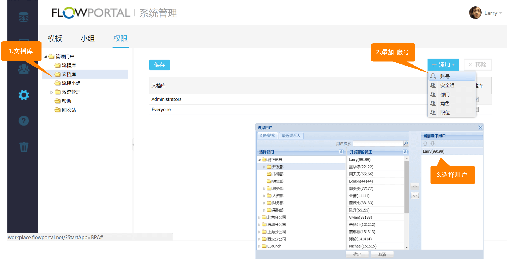
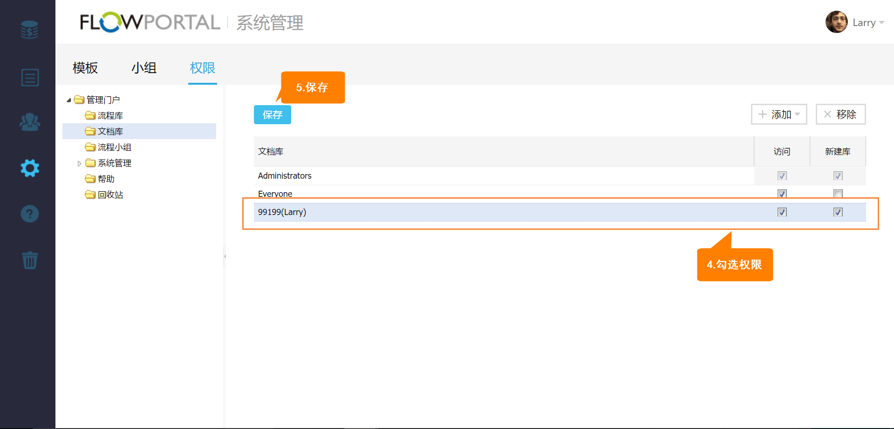

13.2 模块权限
在【系统管理】模块的【权限】界面，可以为管理门户的每个模块配置访问权限。
如添加账号99199对【文档库】的访问权限与新建文档库权限
首先进入【文档库】权限配置界面，点击【添加】按钮并选择【账号】，在弹出的组织结构窗口中选择要添加的99199用户，然后通过勾选授予99199【访问】权限与【新建库】权限，最后点击【保存】按钮完成权限配置。


Created with the Personal Edition of HelpNDoc: Full-featured Documentation generator